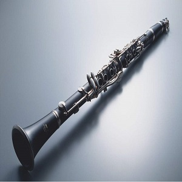

Fuyuanhao
木管乐器
木管乐器的得名是由于它们起初都是木制的，但是现在许多木管乐器 也用金属和塑料制造。木管内会有钻孔，有的木管钻孔是圆锥形，一头小一头大；有的是圆柱形，从钻孔一边到另一边 的直径相同。另外，木管乐器还装有吹口，便于吹奏者吹入空气。

单簧管

双簧管
弹拨乐器
弹拨乐器是用手指或拨子拨弦，及用琴竹击弦而发音的乐器总称。弹拨乐器分横式与竖式两类。 横式，如：筝(古筝和转调筝)、古琴、扬琴和独弦琴等；竖式，如：琵琶、阮、月琴、三弦、柳琴、冬不拉和扎木聂等。
弦乐乐器
弦乐一般是指西洋管弦乐队中的弦乐组（小提琴，中提琴，大提琴，低音提琴）。 可以合奏的乐器很多，在西洋弦乐方面最常见的是弦乐四重奏（第一小提，第二小提琴，中提琴，大提琴）不过形式也不固定。
铜管乐器
铜管乐器是一种将气流吹进吹嘴之后，造成嘴唇振动的乐器。他们也被称为“ labrosones ”，字面上的意思是“嘴唇振动的乐器”。 要在按键乐器上改变音高，有两个方法能够办到：一、压下按键改变管子的长度，二、演奏者所吹出的气流改变嘴唇的振动频率。
打击乐器
打击乐器是一种以打、摇动、摩擦、刮等方式产生效果的乐器族群。打击乐器可能是最古老的乐器。有些打击乐器不仅仅能产生节奏，还能作出旋律和合声的效果。